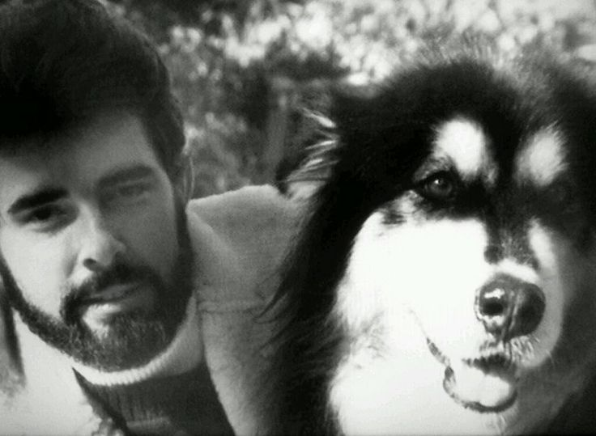

Chewbacca se inspiró en el perro de George Lucas
Chewbacca, el fiel copiloto del Halcón Milenario, tiene una historia de origen muy tierna. Su diseño y personalidad se inspiraron directamente en el perro de George Lucas, un Alaskan Malamute llamado Indiana. Lucas solía llevarlo a todas partes en su auto, y la imagen del enorme can sentado en el asiento del copiloto encendió la chispa creativa.
El personaje de Chewbacca fue concebido como una mezcla de fuerza bruta y ternura, muy parecido al comportamiento del perro de Lucas. Aunque físicamente se alejó de los perros reales, Chewbacca conserva esa lealtad perruna, siempre al lado de Han Solo y dispuesto a enfrentarse a cualquier amenaza por sus amigos.
La conexión con el perro no termina ahí. Ese mismo Alaskan Malamute también inspiró el nombre de otro famoso personaje: Indiana Jones. Así, Chewbacca no solo es un ícono del universo Star Wars, sino también una muestra del amor de Lucas por su mascota, transformado en historia galáctica.
← Volver a curiosidades de Star wars